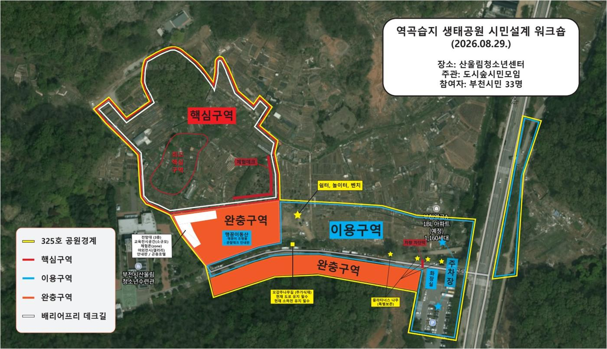
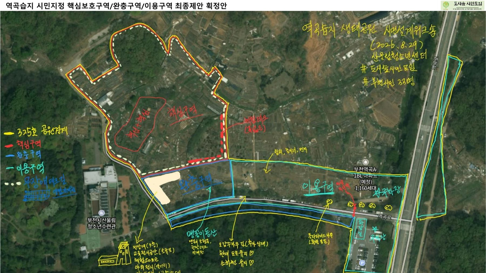

협의 타임라인
간담회, 공문, 현장 모니터링, 시민 행사를 한 줄로 이었습니다. 갈색 점은 협의 방향이 바뀐 주요 기록입니다. 사진을 누르면 크게 볼 수 있습니다.
- 기록을 불러오는 중…
시민설계안: 세 개의 구역
2026년 8월 29일 시민설계워크숍(33명 참여)과 9월 7일 종합 회의를 거쳐 정리해, 9월 17일 부천시와 LH에 공문으로 제안한 역곡습지 생태공원 설계안입니다.

핵심구역Core Eco-Zone · 습지 원형 보존
산울림청소년센터 앞마당 전면의 자연 형성 습지 공간입니다. 사람의 출입을 차단하는 보호 울타리를 두르고 원형 식생을 그대로 보존해 생태적 안식처 역할을 하도록 고안했습니다.
완충구역Buffer Zone · 관찰과 간접 체험
핵심구역과 맞닿은 완충 공간입니다. 무장애 데크길(둘레길), 관망 데크, 소규모 교육전시공간, 체험 공간, 야외전시 갤러리, 모감주나무길 추가 식재, 안내판과 곤충 호텔로 시민의 자연 관찰을 돕습니다.
이용구역Active/Transition Zone · 시민과 아파트의 소통
산울림청소년센터 건물 영역과 남서측 도로(역곡로) 부근입니다. 친환경 쉼터·놀이터·벤치를 이어 시민 여가 공간으로 씁니다.

시민 의견 종합
제안된 공원 이름
꽁이생태공원, 산울림생태공원 (그 밖에 역곡습지생태공원, 맹꽁이생태공원, 공공야생신탁공원, 울림 꽁이 생태공원, 야생생명커뮤니티공원, 야생센터공원, 맹글생태공원, 맹꽁공원, 습지공원)
워크숍 개요
2026. 8. 29.(토) 15:30~18:00, 산울림청소년센터 1층 맥놀이판. 관내 청소년·환경활동가·시민 33명(25명 예정)이 7명씩 4개 모둠으로 설계. 생태 모니터링 결과 공유, 청소년 모니터링 발표, 역곡습지 식생과 생태공원 조성 방향 강의 후 모둠별 설계와 발표.
설계 가이드라인
워크숍 구상 스케치를 바탕으로 습지 보호와 시민 편의, 아파트 단지와의 경계를 함께 고려해 정리한 세부 제안입니다.
진입로·주차 시설 (원형 보전 최우선)
- 생태계 분절을 막기 위해 진입로는 기존 도로와 소하천 구조를 그대로 유지해 지형 분절과 물 흐름 교란을 막음
- 신규 포장으로 인한 서식지 훼손을 줄이기 위해 주차장과 화장실은 기존 주차장 부지 및 그 인근에 모아 배치
생태 보전과 안전망
- 양서류·야생생물 로드킬 예방을 위한 맹꽁이 보호 펜스를 견고하게 설치
- 인접 아파트 경계부에 보호펜스를 설치해 생활권과 생태계를 물리적으로 분리
- 습지 보호 울타리와 대상지 내 기존 우물 보호 조치
- 핵심구역(꽁이 절대 보호구역)은 맹꽁이 서식·산란 환경을 원형 그대로 유지하고 인위적 간섭을 전면 차단
관찰과 환경교육 시설
- 습지 주변 무장애 데크길(둘레길)로 사람 발길에 의한 훼손 방지
- 관망 데크와 산울림청소년센터 옥상(3층)을 활용한 습지 전망대
- 소규모 교육전시공간, 습지 교육실, 터널 체험관, 생태체험관
- 곤충 호텔, 맹꽁이 조형물, 야생화 초지, 모감주나무길 추가 식재
- 관찰장비 보관함, 관찰 망원경·장화 대여
시민 편의와 체험·여가
- 생태조형 야외 갤러리와 체험존, 산울림청소년센터 전면 완충지와 유기적으로 연결
- 시민 이용공간 내 무대, 쉼터, 습지 변두리의 지붕 있는 벤치
- 텃밭 체험과 맹꽁이 보전을 연계한 공원 자체 운영 밭 가꾸기
- 무에너지 캠핑·비박 공간, 자연 놀이터, 개울가 물레방아, 소규모 물웅덩이
향후 운영·관리
- 인근 산울림청소년센터에 공원 관리 협업과 운영권(공공 생태교육, 조망 안내소, 스탬프 투어, 관리 조례 제정 등)을 부여하는 연계 방안
공문 원문
협의 과정에서 오간 공문 8건의 본문을 그대로 옮겼습니다. 결재란의 담당자 이름과 이메일 등 하단 정보는 뺐습니다.
자료실
협의 과정에서 만들어지거나 참고한 자료입니다. 원본을 그대로 공개하기 어려운 자료(강연자 저작물, 개인정보가 담긴 자료, 대용량 보고서)는 요약과 출처만 적었습니다.
발표자료: 부천 역곡습지, 시민의 기록과 미래를 위한 제안
부천시지속가능발전협의회, 경기 생물다양성 보존 프로젝트 발표 (2026. 6. 25.) · 16장 · 개인 이름과 연락처는 흐리게 처리
2003년 부천청소년수련관(현 산울림청소년센터) 환경·생태보존 보완대책(안)
부천시 · 서울시립대 조경학과 「환경친화적인 부천시 청소년수련관 건설방안」(2003. 12.) 포함, 총 48쪽 중 3쪽
센터를 지을 때부터 이 일대가 습지였다는 기록입니다. 건축물을 양쪽 습지에서 20m 이상 떨어뜨려 생태를 보존하고, 지하층을 최소 규모로 하며 파일기초를 지양해 지하수를 교란하지 않고, 지하수 개발을 억제해 습지의 지하 수맥을 보존한다는 계획과, 논(답) 일대를 연못이 있는 생태습지로 보존하는 이용계획이 담겨 있습니다. 같은 자료에는 당시 수련관 예정지 주변에서 반딧불이가 발견되어 시민단체가 생태공원을 제안했다는 2003년 신문 보도와 ‘원미산 살리기’ 시민운동 자료도 함께 묶여 있습니다.
맹꽁이·금개구리 캐릭터
시민설계 워크숍과 행사에 쓰인 캐릭터 등신대(100×120cm)와 맹꽁이 일러스트
역곡습지 식생조사 (2025~2026, 총 4회)
전문가 초본 조사(참나무 군락·목본 포함) 결과입니다. ●는 해당 조사에서 확인된 종이며, 조사자가 남긴 메모는 그대로 옮겼습니다(** 표시는 원문 그대로). 원문 표의 종명 표기를 수정하지 않았습니다.
| 종명 | 2025. 7. 22. | 2025. 7. 30. | 2025. 8. 31. | 2026. 7. 29. |
|---|
관련 민원 (국민신문고)
2024년 7월부터 제기된 역곡습지·맹꽁이 관련 민원 목록입니다. 다부처 민원은 처리기관을 함께 적었습니다.
| 신청일 | 제목 | 처리기관 | 신청번호 |
|---|
언론보도
| 매체 | 기사 |
|---|
데이터 내려받기
이 페이지의 모든 기록을 기계가 읽을 수 있는 형식으로 공개합니다. CSV는 엑셀에서 바로 열립니다(UTF-8). 링크가 열리지 않으면 ‘복사’로 내용을 복사해 쓰세요.